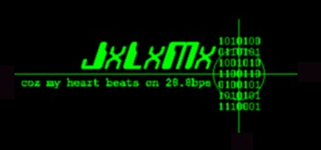

ok, i known that this site is so easy to hack, but it's only a message
ok.. i known too that i'm late, I really wanna say
happy birthday Attrition
"Attrition.org has changed my life - not in the way you
might think - you see, attrition.org is my grandchild in a
bizarre sort of way. Attrition.org was conceived by my son
and just as for any mother the journey into the role of
grandmother is quite unique. This grandchild, attrition.org.,
has opened many doors for me. This child shows me things I
=>
this is incredible!!!!!so deep
have never seen. Sometimes it scares me with where it goes in
the world of cyberspace. Sometimes it brings me to tears with
laughter. It never ceases to amaze me. Like any one year old
I believe it is still finding its way. Attrition.org is the
image of its father. It is a brilliant star, a myriad of emotions,
a wealth of knowledge, a whirlwind of activity. I hope I am
around for many years to come to enjoy attrition.org., this one
of a kind offspring who has come so far in just 365 days.
Happy Birthday!!!" - Jericho's Mother
The long overdue Attrition One Year Birthday Rant
and congratulations to the "brave" server....(p166?¿)